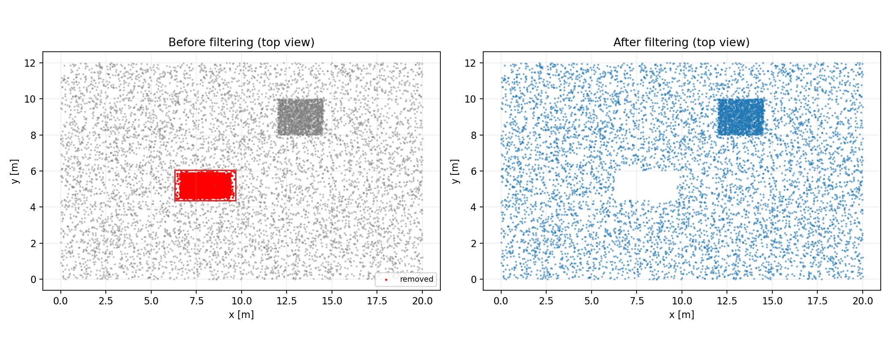
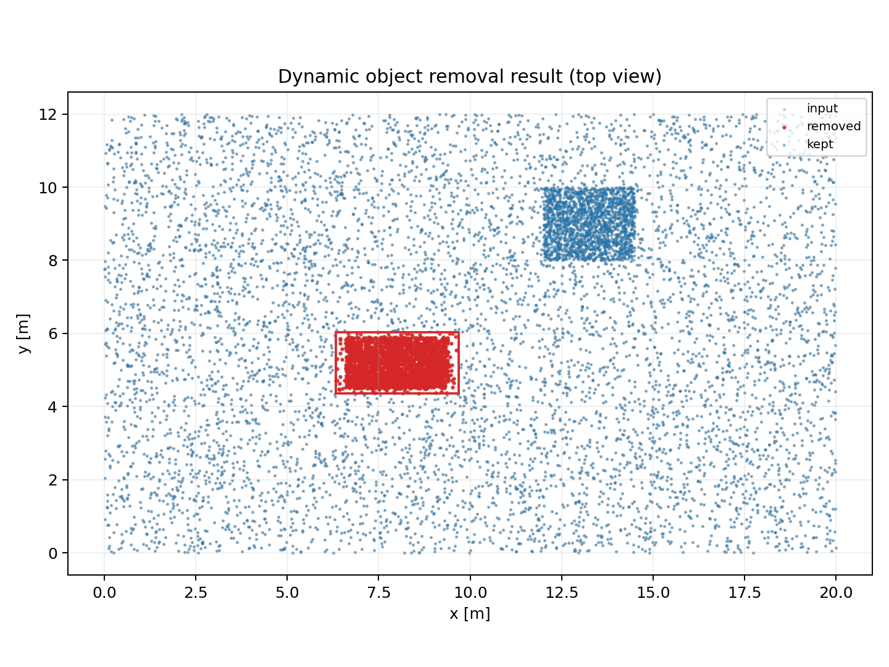
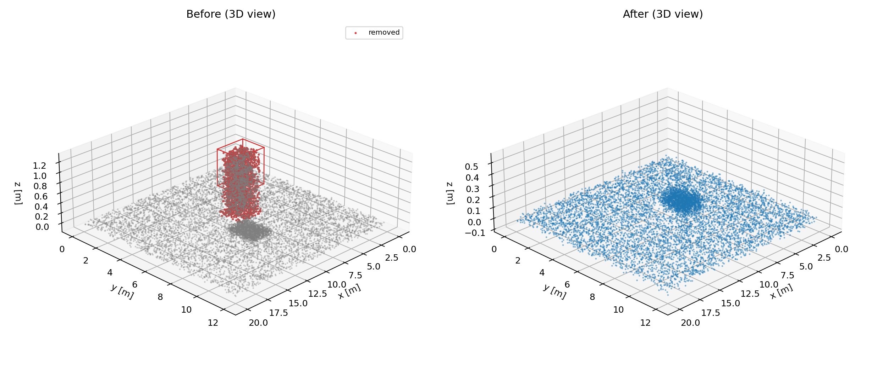

Dynamic Object Removal デモ
入力点群: 11000 点 / 出力点群: 8633 点 / 除去: 2367 点
デモ生成データ
demo_input.xyz
demo_objects.json
demo_output.xyz
3Dビュー
インタラクティブ表示:
index_3d.html
（マウスで回転・拡大縮小可能）
index_3d_standalone.html
（サーバ不要。直接開いて確認）
Before / After

Summary

3D Topology (projected)
